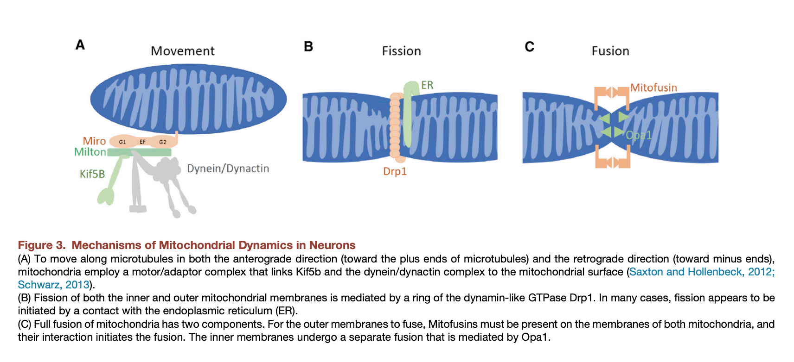
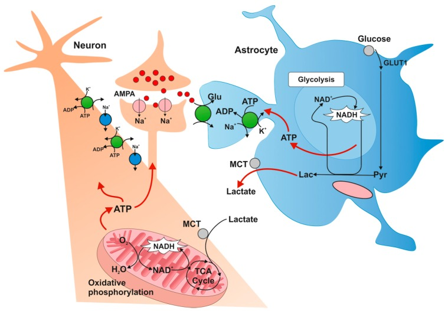

42 뇌 내의 에너지 대사
42.1 미토콘드리아와 에너지 대사
42.1.1 미토콘드리아와 mitostatis
뇌가 사용하는 에너지를 만들어 공급하는 것은 세포 내의 미토콘드리아이다. 미토콘드리아는 두 개의 지질막으로 둘러써여진 세포 내 소기관으로, 그 자체가 독자적인 유전정보(mtDNA)1를 지닌다는 점에서 다른 소기관과는 궤를 달리한다. 세포 내에 들어있는 미토콘드리아의 개수는, 한 개도 없는 적혈구로부터 1,000~2,000개가 넘는 간 세포에 이르기까지 매우 다양하다.2 미토콘드리아는 숙주 세포와는 독립적으로 분열하며, 숙주 세포가 분열할 때는 대략 1:1의 비율로 자손 세포에 배분된다.[1] 미토콘드리아가 분열하는 과정을 fission이라 하며, 역으로 다수의 미토콘드리아가 결합하는 과정을 fusion이라고 부른다.[2] 미토콘드리아는 fission과 fusion을 섬세하게 조절함으로써 주변 환경 변화에 대응한다. 따라서 fission과 fusion에 참여하는 유전자에 변이가 있으면 심각한 유전 질환에 이르게 된다.[1]
1 Mitochondria DNA (mtDNA): 미토콘드리아 내부에 원형의 염색체로 존재하는 독립적인 DNA. 인간 mtDNA는 16,569 개의 염기로 구성되면 13개의 단백질을 코딩한다. 아마도 진화론적으로 먼 옛날 진핵세포가 삼켜버린 박테리아의 게놈이 mtDNA가 되었을 것이라 짐작된다. 핵 내의 DNA와는 별개로 복제되며, 자손에게 유전될 때도 엄마의 난자를 통해서만 물려내려진다.
2 적혈구는 미토콘드리아가 없기 때문에, 산소를 운반하면서도 산소를 쓰지 않고, 혐기성 발효를 통해 에너지를 생성한다.

Fission은 진핵세포에서 세포내 함입(endocytosis)을 담당하는 dynamin 계열인 GTP 분해효소3에 의해 일어난다. Fission은 미토콘드리아의 수를 늘리고, 분열하는 숙주 세포에 균등하게 나눠주기 위해서 필수적인 과정이다. 신경세포와 같이 분열하지 않는 세포에서 왜 fission이 필요한지 궁금할 수 있지만, 하나의 신경세포에 백만 개 이상의 미토콘드리아가 포함되어 있으며, 하나의 시냅스마다 수십에서 수백개 정도의 미토콘드리아가 배치된다는 점을 고려하면 활발한 분열이 꼭 필요할 것이다. 이렇게 미토콘드리아의 수를 역동적으로 유지하고, 필요한 곳에 배치하는 과정을 neuronal mitostasis라고 한다.[3] 세포체에서 미토콘드리아는 따로 떨어져 존재하는 것이 아니라, 수백, 수천개의 미토콘드리아가 소포체(endoplasmic reticulum)에 결합한 덩어리 형태로 존재한다. 이들 중 일부의 미토콘드리아를 새로 생겨난 시냅스로 배치하기 위해선, 소포체나 미토콘드리아 덩어리로부터 분리하여 축삭을 따라 이동시켜야 하는데, 이때 fission과정이 필요해진다.[3]
3 Dynamin은 clathrin이 덮인 세포막을 세포 내로 함입시켜 정해진 위치로 이동시키는 과정을 담당한다. Dynamin superfamily에는 dynamin을 비롯하여 Mx proteins, OPA1, mitofusins, and GBP 등이 포함되는데, 여기서는 구체적으로 dynamin-related protein 1 (Drp1)을 가리킨다.
Fusion은 fission의 반대 과정으로 보면 된다. Fission은 새로 젊은 미토콘드리아를 생성하는 과정이라서 쉽게 이해가 되지만, fusion은 무엇 때문에 존재하는지 아리송하다. 미토콘드리아가 독자적인 유전체(mtDNA)를 가지고 있다고는 하지만, 하나의 미토콘드리아가 반드시 하나의 mtDNA를 갖고 있는 것은 아니다. Fission과 mtDNA 복제 과정은 별개이며, 단지 fission을 통해 원래의 미토콘드리아가 둘로 나누어질 때 적당히 mtDNA를 배분하는 것뿐이다. 그러다보니 개개 미토콘드리아에 유전물질이 골고루 배분되지 못하는 경우가 생긴다. 따라서 미토콘드리아는 fusion 과정을 통해 mtDNA를 다시 배포하고, 변이를 일으킨 mtDNA4의 영향을 중화시킨다.
4 mtDNA의 복제 과정은 숙주 세포의 DNA 복제보다 원시적이기 때문에 오류가 발생할 비율이 높다.
Mitostasis를 구성하는 세부 프로세스에는 fission/fusion 뿐 아니라 미토콘드리아를 목표 지점까지 운반하는 과정도 포함된다. 이는 세포 내 뼈대 단백질, 미세소관, 그리고 kinesin 등이 동원되는 축삭의 전향성 운반에 의해 일어난다.(6-7-2-1절) 따라서 이 구성요소 어딘가에 하나라도 결함이 생기면, mitostasis 전체가 영향을 받게 된다.5
5 Mitostasis에 참여하는 Drp1, Opa1, TRAK1, mitofusin 2 등의 변이는 각각 독특한 신경학적 질환을 일으킨다. 파킨슨 병의 일부 아형은 PINK1과 Parkin의 변이로 말미암아 미토콘드리아의 이동에 문제가 생겨서 일어난다.[4]
42.1.2 미토콘드리아와 조현병
한편 조현병 발병과정에서 미토콘드리아가 차지하는 역할 역시 조금씩 연구가 진척이 되고 있다. 에너지 대사에 주목하는 연구자들은 조현병 환자에서 산화적 인산화의 첫단계인 complex I의 이상이 자주 발견된다고 보고한다. 연구자들은 조현병 환자에서 얻어진 세포 는 산소 대사 효율이 떨어지며, 이 현상이 주로 complex I의 문제 때문이라는 것을 알아내었다.[[5]; [6]]6 조현병 환자에서는 complex I의 주요 효소인 NADH dehydrogenase의 발현양이 떨어지며, NDUFV1과 NDUFV27의 변이가 보다 빈번히 발견된다.[7,8]
6 산화적 인산화를 연구하기 위해선 상당히 복잡하고 고난도의 분석기술을 필요로 한다. 환자에서 얻어낸 세포를 배양한 후, 배양된 세포의 산소 소모량과 산소 소모 시의 미세한 막 전위(membrane potential) 변화를 측정한다.
7 NADH dehydrogenase [ubiquinone] flavoprotein 1, 2 (NDUFV1, 2)
Microstasis의 결함도 종종 보고된다. 미토콘드리아의 분포나 형태가 대조군과 차이가 난다거나, Opa18 유전자 발현이 줄어있다는 보고가 있었다. 미토콘드리아의 형태를 결정하는 G729유전자는 오랫동안 조현병 취약 유전자로서 연구되었으며[9,10], 대표적인 취약 유전자인 DISC1 역시 미토콘드리아의 이동을 책임지는 Miro1과 TRAK10을 조절하기 때문에 mitostasis에 관여한다고 보아야 한다.[11] 이외에도 DISC1은 Mfn1,211와의 상호작용을 통해 fission과 fusion에도 핵심적인 역할을 한다.[12]
8 Opa1: dynamic-like 120 kDa protein을 코딩하는 유전자. 이 단백질은 미토콘드리아의 fusion 과정을 조절한다. 돌연변이가 생기면 시신경 위축(optic atrophy)이 발생한다.
9 G72: D-amino acid oxidase activator (DAAO)를 코딩하는 유전자. DAAO는 D-amino acid oxidase (아미노산의 이성질체인 D-아미노산에 작용하여 과산화수소를 생성하는 효소)에 결합하여 작용을 보조하는 단백질로서, 조현병 및 양극성 장애의 발병위험을 높인다. 리스페리돈은 DAAO를 억제한다.
10 Trafficking Kinesin Protein (TRAK): Miro1과 kinesin을 연결시키는 어댑터 단백질로 미토콘드리아의 이동에 참여한다.
11 Mitofusin-1,2 (Mfn1, 2): 미토콘드리아의 fusion에 참여한다.
42.1.3 항정신병 약물과 mitostasis
항정신병 약물 역시 에너지 대사 및 mitostasis 모두에 무시할 수 없는 영향을 미친다. 기대하는 바와는 달리 에너지 대사에 있어서 항정신병 약물의 효과는 부정적인 측면이 더 강하다. 메타분석 결과를 보았을 때에도 항정신병 약물이 complex I의 기능을 떨어뜨리는 것은 분명해보인다.[13] 직접 미토콘드리아 세포막 전위를 흩뜨리기도 하고[14,15], 관련된 단백질의 발현을 방해하기도 한다.[16,17] 실제 조현병 환자에서 complex I의 효율을 측정하였을 때, 항정신병 약물을 사용한 환자들은 그렇지 않은 환자에 비해 더 효율이 떨어졌다.[6] Microstasis 측면에서도 올란자핀이 Opa-1의 발현을 줄이고 fusion을 방해한다는 연구 결과가 있다.[18] 학자들은 이런 부정적 영향이 조현병 증상을 악화시킨다기 보다는, 인슐린 저항성이나 대사증후군 발생과 관계가 있을 것이라고 본다.[18,19]
하지만 또 다른 연구에서, 항정신병 약물 치료를 1달 정도 밖에 받지 않은 환자들은 미토콘드리아의 에너지 대사 관련 지표에 있어 대조군과 유의한 차이가 있었지만, 몇 년 이상 치료를 받은 군에서는 대조군과 거의 차이가 나지 않았다.[20] 비록 대상군의 수가 작은 개념정립 연구에 불과하였지만, 저자들은 장기간의 약물 치료가 약물 치료 이전부터 있어왔던 에너지 대사 이상을 바로잡았을 것이라고 해석하였다.
42.2 이기적 뇌 가설
42.2.1 뇌의 에너지 공급을 위한 조절 기전
뇌는 용적이나 무게는 작은 편이지만 체내 에너지 소모량의 20% 정도를 차지한다.12 이렇게 많은 에너지를 쓰기 때문에, 체내의 모든 에너지원으로부터 우선적으로 열량을 공급받는다. 뇌가 사용하는 에너지의 대부분은 K+ 펌프를 가동시켜, 일단 탈분극된 신경세포를 다시 원상태로 되돌리는데 사용된다. 뇌가 인지 기능을 발휘하거나 감정적으로 동요할 때는 해당 부위에 혈류량이 급격히 증가한다. 이런 식으로 뇌의 에너지 소모량은 그때그때 필요에 따라 역동적으로 변화하기 때문에, 항상 충분한 에너지가 마련되어 있지 않으면 정상적인 인지 기능 발휘에 문제가 생긴다.[22] 미토콘드리아의 결함으로 인해 에너지 생성이 제대로 되지 않는 것은 다양한 신경퇴행성 질환에서 공통적으로 관찰되는 현상이다.[23]
12 이 수치는 성인 뇌에 해당한다. 발달 과정에 있는 영,유아의 뇌는 더 많은 에너지를 필요로 하며, 하루 에너지 필요량의 43% 이상을 뇌가 소비한다. 성숙한 신경망을 발생시키기 위해 이렇게 많은 에너지가 필요하기 때문에, 다른 포유류나 영장률에 비교했을 때 발달과정에 유난히 긴 시간이 걸린다.[21]
뇌의 에너지 소모량이 시간적으로 또 공간적으로 시시각각 변화된다는 것은, 원활한 에너지 공급을 위해 정교한 조절 기전이 마련되어 있어야 함을 시사한다. 학자들은 neurovascular coupling과 neurometabolic coupling 현상을 통해 이를 설명하고자 한다.[22] Neurovascular coupling이란 특정 뇌조직이 흥분하여 에너지 필요량이 높아지면 그 부위 혈관을 확장시켜 충분한 혈액을 공급하는 기전이다.[24] 여기에는 신경세포의 NO 신호전달, 그리고 성상세포의 Ca2+ 농도 조절이 큰 역할을 한다.[25,26] 한편 neurometabolic coupling 혹은 bioienergetic coupling이란 효율적인 에너지 공급을 위해 신경세포와 성상세포가 역할분담을 하는 현상을 가리킨다. 에너지 필요량이 갑자기 늘어나면, 신경세포는 산화적 인산화에만 집중하고, 대신 당 분해과정은 주위 성상세포에게 위탁한다.[27]

Metabolic profile of astrocytes [16]. Glucose is transported to astrocytes through GLUT1 transporter and then metabolized to lactate. Lactate is transported outside astrocytes and taken up by neurons by monocarboxylate transporters (MCTs). Intracellular lactate in neurons is oxidized to pyruvate and metabolized along the oxygen pathway. GLUT1: glucose transporter-1; MCT: monocarboxylate transporter; TCA: Krebs cycle; Pyr: pyruvate; Lac: lactate
42.2.2 젖산 셔틀
신경세포가 필요한 에너지를 모두 스스로 생성해내야 한다면 그만큼 많은 양의 당을 분해해야하는데, 신경세포는 이를 감당할 능력이 없을 뿐더러 이 과정에서 발생하는 산화적 스트레스때문에 귀중한 신경세포가 손상을 입게 된다. 이에 비해 주변 성상세포는 산소 소모량이 많지 않기 때문에 분담을 해도 큰 무리가 없다. 신경세포가 흥분하면 시냅스 주변에 글루타메이트의 농도가 상승한다. 이를 민감하게 포착하는 성상세포는 세포 내에 이미 글리코겐을 비축하고 있기 때문에 즉각 당분해 과정에 돌입하고, 젖산을 만들어 세포 밖으로 배출한다. 성상세포에서 분비된 젖산은 monocarboxylate transporter (MCT)를 통해 신경세포 내에 유입되며, 포도당보다 훨씬 쉽게 pyruvate로 전환된다. 이 과정에서 발생한 NADH는 산화적 인산화의 원재료로 사용된다.[29]
신경세포가 자신이 소모하는 에너지의 상당 부분을 주변의 성상세포로부터 공급받는다는 이론은 Magistretti13가 처음 제안하였으며, 속칭 “성상세포-신경세포 젖산 셔틀 가설 (astrocyte–neuron lactate shuttle hypothesis)”라고 불리운다.[30,31]신경세포로의 에너지 공급을 유해 얼마나 정교한 기전이 가동되고 있는지 엿볼 수 있는 사례라고 하겠다.
13 Pierre Magistretti (1952~): 이탈리아 출신의 스위스 신경생물학자. 주로 뇌의 에너지 대사와 정신질환에 있어서의 신경교세포의 역할에 대해 연구하였다.
42.2.3 이기적 뇌 가설
신경세포에 공급할 에너지를 마련하기 위해 다른 조직들이 도움을 주는 사례는 젖산 셔틀에 그치지 않는다. 만약 뇌로 가는 혈류가 부족하거나, 조직 내 ATP 생성이 제대로 되지않아 사용할 에너지가 부족하다고 감지되면, 뇌는 신체의 건강을 훼손시키더라도 에너지 공급을 우선시하는데, 이러한 현상을 “이기적 뇌 가설 (selfish brain hypothesis)”이라고 부른다.[32] 이 가설을 처음 고안한 Peters14에 따르면 뇌가 쓸 에너지가 부족해지면, 뇌는 다음과 같은 방식으로 뇌로 향하는 에너지 공급망을 확보한다. 1) 우선 뇌는 뇌-혈관 장벽이나 모세 혈관 상피를 통해 포도당 흡수를 가속시킨다. 2) 이것으로도 부족하면 HPA 체계의 설정값을 변화시켜서 심한 스트레스를 받았을 때와 동일한 대사 변화를 일으킨다. 즉, 포도당이 간세포나 지방세포로 저장되는 것을 막아 혈당을 높이고, 간에 저장된 글리코겐을 분해하여 혈중으로 방출한다. 또한 섭식중추를 자극하여 식욕을 증가시킨다. 이러한 과정이 지속되면 인슐린 저항성을 유발하여, 당뇨, 비만의 지름길이 된다.[32,33]
14 Achims Peters (1957~): 독일의 신경과학자. 1998년에 이기적 뇌 가설을 발표하였다. 이 가설은 뇌 생리 뿐만 아니라, 비만의 기전을 이해하는데도 큰 영향을 끼쳤다.
42.3 조현병에서의 에너지 대사
42.3.1 비효율적 에너지 공급
과거에는 대사증후군이 오로지 비정형 항정신병 약물 사용때문에 생기는 것처럼 인식되어 약물에 대한 반감을 부추기는 원인이 되었으나, 연구가 거듭될수록 약물을 한번도 사용하지 않은 초발 정신증 환자에서도 당대사 이상이나 인슐린 저항성이 관찰된다는 것이 분명해졌다. 약물에 의하든 그렇지 않든 조현병 환자에서 대사증후군의 유병률이 높다는 것은 부인할 수 없으며, 이는 단순히 식욕 증가때문이 아니라 좀더 근본적인 에너지 대상의 이상이나 HPA 체계의 잘못된 설정값 때문이라고 여겨지고 있다.
이기적 뇌 가설을 상기해본다면, HPA 체계가 신체 건강을 훼손하는 방향으로 돌아선 이유를 뇌의 에너지 부족으로 가정해볼 수 있다. 수십년간 꾸준히 축적되어온 뇌영상학적 지식에 따르면 조현병 환자는 전전두엽으로 가는 뇌혈류량이 감소되어 있다. PET를 이용하여 18F-fluorodeoxyglucose의 농도를 측정했을 때나, BOLD 기법15을 사용하여 산소 소모량을 측정했을 때 모두, 환자들의 뇌는 정상인에서 기대되는 에너지 소모량에 미치지 못한다.[34,35] 대부분의 학자들은 주어진 과제에도 불구하고 해당 지역의 뇌세포가 활성화되지 않았기 때문에 혈류량이나 산소 소모량이 늘어나지 않았을 것이라 해석하지만, 역으로 혈류를 동적으로 변경하는 속도가 시시각각으로 변화하는 에너지 수요를 따라잡지 못했기 때문이라고 생각해볼 수도 있다.
15 Blood oxygenation level dependent (BOLD): 신경세포는 당분을 축적하고 있지 않기 때문에, 갑자기 에너지 요구도가 높아진 부위에 혈액을 많이 보내어 필요량을 충당한다(neurovascular coupling). 한편 에너지 소모가 많은 부위에서는 산화혈색소(oxyhemoglobin)/탈산소 혈색소(deoxyhemoglobin)의 비가 낮아질 수 밖에 없다. 이 비율이 달라지면 자기장에 대한 반응 역시 달라지는데, 이 원리를 이용하여 영상을 만들어내는 기술을 BOLD imaging이라고 한다.
조현병 환자의 뇌세포가 에너지를 제때 공급하지 못한다는 증거는 미토콘드리아의 효율 저하에서도 찾아볼 수 있다. 미토콘드리아 유전체의 변이가 빈번하고, 현미경으로 보았을 때의 형태가 비정상적인 경우가 많다.[36,37] 기능적으로도 complex I의 기능이 떨어져 있다는 것은 이미 앞절(6-7-6-1)에서 살펴본 바 있다. 산화적 인산화의 효율이 떨어지면, 인근의 성상세포에서 행해지는 당 분해과정(glycolysis)이 이를 보충해야 하는데, 조현병 환자에서 성상세포와 신경세포 사이의 역할 분담 즉 neurometabolic coupling 과정에 문제가 있다는 보고가 많다.[29]
조현병 환자의 뇌 조직이나 말초 혈액에서 단백체(proteome) 분석16을 해보면, 당을 분해하는데 중요한 효소인 hexokinase17, pyruvate kinase, GAPDH 18 등의 활성이 변화되어 있다는 것을 발견할 수 있다. [38] 좀더 직접적으로 성상세포가 만들어내는 pyruvate의 양 또한 감소되어 있다. [39] 또 다른 연구에서 살아있는 조현병 환자 뇌에서 젖산의 양을 MRS를 이용하여 측정하였을 때, 대조군에 비해 젖산 농도가 증가하였고 그 정도가 인지기능과 역의 상관관계에 있음이 보고되었다.[40] 저자들은 미토콘드리아의 이상 때문에 조현병 환자의 뇌가 좀더 혐기성 당분해에 의존하는 것으로 해석하였다.
16 단백체 분석: 어느 한 시점에서, 어떤 생물학적 단위(세포, 조직, 기관 혹은 생체 전체)에서 발견되는 모든 단백질을 정량화하여 분석하는 기법
17 Hexokinase: 포도당(glucose)을 인산화하여 glucose-6-phosphate로 만드는 효소
18 Glyceraldehyde-3-phosphate dehydrogenase (GAPDH): 포도당 분해 과정에서 6번째 단계를 맡고 있는 효소
젖산 셔틀을 비롯한 neurometabolic coupling이 제대로 이루어지지 않는다는 것은 단순히 부실한 에너지 공급으로만 그치지 않는다. 성상세포에서 당 분해가 제대로 이루어지지 않으면, 여분의 포도당은 세포 밖 공간으로 흘러넘치며 주변의 미세아교세포를 과도하게 흥분시킨다. 포도당에 의해 활성화된 미세아교세포는 염증유발성 사이토카인을 분비하기 시작하여 신경염증을 악화시킬 수 있다.[41,42]
조현병의 대표적 취약 유전자인 DISC1이 성상세포에서 젖산 대사에 관여한다는 간접적인 증거도 있다. DISC1에 인공적인 변이를 일으킨 쥐는 이상 행동을 보일 뿐더러, 성상세포로의 포도당 유입양이 줄어들며, 젖산의 생성량도 함께 줄어든다. 쥐의 먹이에 젖산을 첨가해주면 이상 행동이 일부 교정되는 것으로 보아, DISC1 변이가 젖산-셔틀 이상을 일으키고 있을 가능성이 보인다.[43] 이런 식으로 에너지 생성 효율이 떨어지면, 뇌는 어떻게 해서든 혈당을 올려 보상하려 할 것이며 이러한 보상 작용이 인슐린 저항성을 낳는 선행 과정이 될지도 모른다.(이기적 뇌 가설) 조현병의 병태생리 자체가 이런 이상을 포함하고 있다면, 환자들이 겪는 대사증후군을 오로지 비정형 항정신병 약물 사용때문이라고 매도하는 것은 곤란할 것이다.
42.3.2 항정신병 약물의 영향
조현병 환자에게서 찾아볼 수 있는 당대사 이상은 약물을 사용하지 않은 초발 조현병 환자는 물론 아직 발병하지 않은 친척들에서도 드러난다.[44] 그렇다 해도 항정신병 약물이 세포 내 에너지 대사에 아무런 영향을 미치지 않는다는 뜻은 아니다. 조현병 환자에서 complex I의 효율은 거의 절반 가까이 떨어져 있는게 보통이지만, 약물을 복용하고 있는 환자에서는 좀더 심하다.[6] 물론 약물을 쓰지 않는다고 해서 효율이 정상으로 돌아오는 것도 아니고, 동일하게 항정신병 약물을 사용하고 있는 양극성 장애 환자는 별다른 효율 저하를 보이지 않았지만, 이미 비효율적인 에너지 생성 과정을 약물이 더 훼손시키고 있을 가능성이 높다.
앞절에서 살펴본 바와 같이 메타분석 결과를 보았을 때 항정신병 약물이 complex I의 기능을 떨어뜨리는 것은 분명해보인다.[13] 학자들이 이러한 현상을 대사증후군 발생의 원인으로 지목한다는 것도 언급한 바 있다.[18,19] Complex I 뿐 아니라 다른 complex 들에 대해서도, 약물이 효율을 떨어뜨린다는 증거가 있다. 이러한 효과는 ATP 생성을 감소시킬 뿐 아니라, 제대로 환원되지 못한 ROS를 양산한다. 이러한 효과는 가장 최근에 도입된 3세대 항정신병 약물인 brexpiprazole, cariprazine, lurasidone도 마찬가지였다.[45] 게다가 클로자핀과 리스페리돈이 미토콘드리아 유전체의 변이를 더 가속시킨다는 부정적인 결과도 보고된 바 있다.[46]
이런 식으로 증거를 수집하다보면, 적어도 에너지 대사 차원에서는 항정신병 약물이 매우 안 좋은 영향만을 주고 있다는 인상을 준다. 그러나 좀더 긍정적인 효과도 있다. 일부 연구자들은 항정신병 약물 투여 후 뇌 내 젖산 농도가 상승하는 것에 대해, 약물이 대사 이상을 초래하여 부작용을 유발한 증거라고 해석하고 있지만[[47]]19, 오히려 젖산 셔틀이 제대로 작동하면서 성상세포가 분비하는 젖산이 늘어났기 때문이라고 해석할 수도 있다. 배양된 희소돌기아교세포에 할로페리돌과 클로자핀을 투여하였을 때, 전자의 경우에는 포도당 소모가 줄면서 생성되는 젖산의 양도 줄어드는 반면, 클로자핀은 세포 내 포도당 유입이 늘고 젖산 생산량도 늘었다.[48] 즉 젖산이 늘어나는 것이 당 분해가 활발하고 산화적 인산화 효율이 높아지는 것을 가리킬 수도 있다는 뜻이다.
19 허혈 상태나, 경련성 발작 등 뇌 손상 징후가 있으면 젖산 생성이 늘어나, 젖산 산증(lactic acidosis) 상태가 도래하기 때문에, 젖산이 늘어나는 것은 보통 부정적인 의미로 받아들여진다.
유사한 연구 결과로 배양된 세포에 MK-801를 투여하면 당 분해 과정이 손상되는데, 특히 신경세포나 미세아교세포 보다 희소돌기아교세포에서 더 심하게 나타난다. 흥미로운 것은 MK-801과 함께 클로자핀을 투여하면 희교돌기아교세포에서의 당 분해 손상이 훨씬 덜 심했다는 점이다.[49] 또 다른 실험에서는 유사한 실험 조건에서, MK-801만 처리했을 때와 클로자핀과 MK-801을 함께 처리했을때를 비교하여, 발현량에 차이가 나는 단백질들을 탐색해보았다. MK-801로 인해 변동되는 단백질 중 일부는 당 대사와 관련된 단백질이었는데, 이중 상당수가 클로자핀이 투여되면 반대방향으로 움직인다는 것을 확인할 수 있었다.[50] 에너지 공급에 매우 민감한 지표 중 하나는 parvalbumin 발현 사이뉴런의 면역반응성(immunoreactivity)이다. 쥐에게 장기간 간헐적으로 PCP를 투여하면, 전전두엽과 시상에서 parvalbumin 면역반응성이 감소하는데, 클로자핀을 함께 투여하면 거의 정상화된다. 이는 할로페리돌에서는 발견되지 않는 클로자핀의 독특한 효과이다.[51]
약물 투여 후 뇌 세포에서의 에너지 대사 회복은, 전전두엽이나 시상으로의 혈류량 혹은 포도당 소모량의 증가를 통해서 간접적으로 엿볼 수 있다. 할로페리돌과 비교했을 때 비정형 약물인 sertindole이나 올란자핀은 포도당 소모량 증가 효과가 훨씬 두드러졌다.[52,53] 영국의 Turkheimer가 이끄는 연구진은 당시까지의 증거들을 수집한 후 다음과 같은 가설을 제시하였다.[54] 즉 항정신병 약물은 조현병 환자 뇌의 에너지 소모량을 끌어올리는 효과가 있지만, 이러한 효과가 증상 개선으로 이어지려면 그만큼 기반이 되는 미토콘드리아를 비롯한 에너지 관련 기전들이 온전해야 한다는 것이다. 반대로 만약 기반 자체가 취약한 상황이라면, 항정신병 약물의 자극을 견뎌내지 못하고 오히려 부정적인 효과를 초래할 수도 있다는 가설이다. 물론 이는 어디까지나 가설에 지나지 않지만, 뇌의 에너지 수급 균형이 조현병을 비롯한 정신질환의 발병과 치료에 그만큼 깊게 관여하고 있음을 보여주는 단적인 예이다.